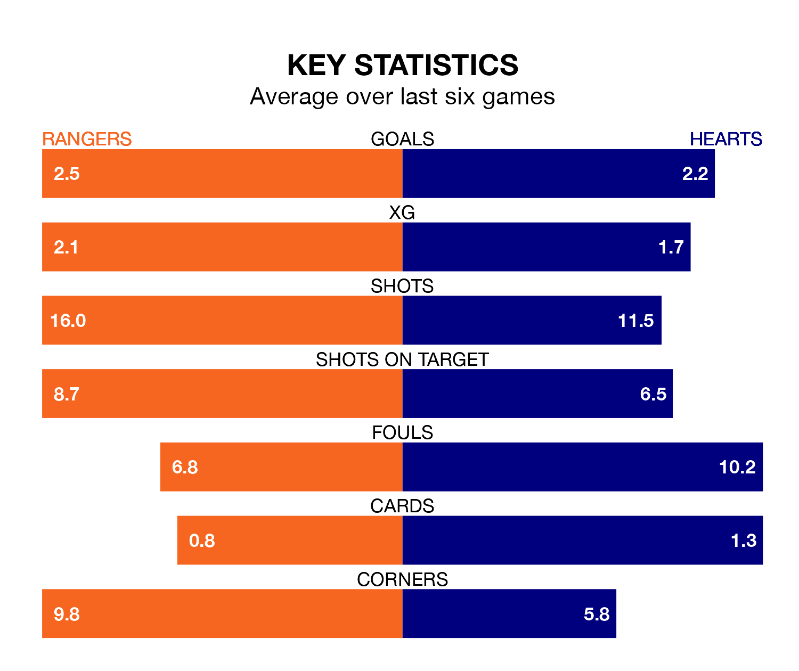

Two of the Premiership's top sides face each other at the Ibrox Stadium in Saturday's kick-off, when table-topping Rangers host third-placed Hearts.
Rangers have picked up 21 wins and one draw from 26 games so far this season, and sit 13 points above the visitors going into the 3pm match.
Hearts, meanwhile, have won 16 and drawn three, picking up 51 points.
Rangers are in exceptional form in the Premiership, with six wins and no losses from their last six games.
And also with six wins and no losses over that period, Hearts's form is identical – they have both taken 18 points from 18.
With 56 goals in 26 games so far this season, the home side are the league's second-highest scorers with 2.2 goals per game. And they are conceding fewer than average, letting in 13 goals at a rate of 0.5 per game.
The visitors, meanwhile, are average scorers, with 1.3 goals per game. They have conceded 0.8 goals per game.
In Lawrence Shankland, Hearts have the league's sharpest shooter so far this season. He has notched 18 goals in 26 appearances.
His goal rate of one every 130 minutes is quicker than that of James Tavernier, Rangers's top scorer with a goal every 194 minutes, and a total of 12 goals in 26 games.
In the last 10 years, Rangers and Hearts have played each other on 33 occasions. Rangers won 22 of them, Hearts six, and they drew five times.
On average, Rangers scored 2.0 goals and Hearts 0.9 in those matches.
Their last meeting was on December 6, when Rangers won 1-0 away.
Rangers's last match was on Sunday, a 3-0 win against St. Johnstone, with Tavernier (two) and Mohammed Diomande getting the goals for Rangers.
Hearts beat Motherwell 2-0 last time out, on February 17, with Kenneth Vargas and Shankland on the scoresheet.
Saturday's match will be refereed by Nick Walsh, who has taken charge of 13 Premiership games so far this season, issuing two red cards and booking 65 players. He has awarded seven penalties.
The last Rangers game Walsh refereed was a 2-1 away loss to Celtic on December 30. His last Hearts match was their 2-0 win at home against St. Mirren on December 23.
Updated: 10:08 (UTC), 23/02/24